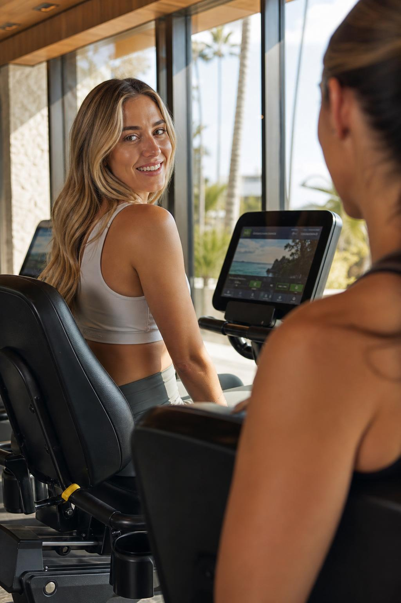
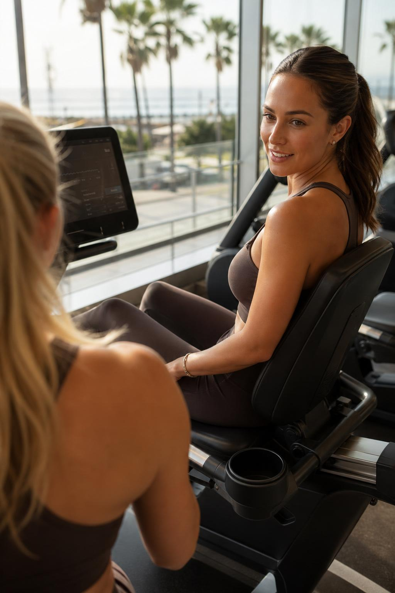
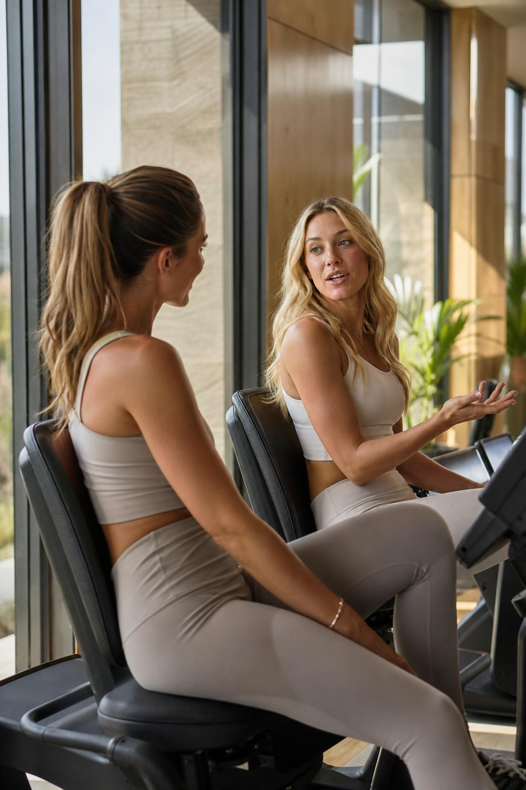
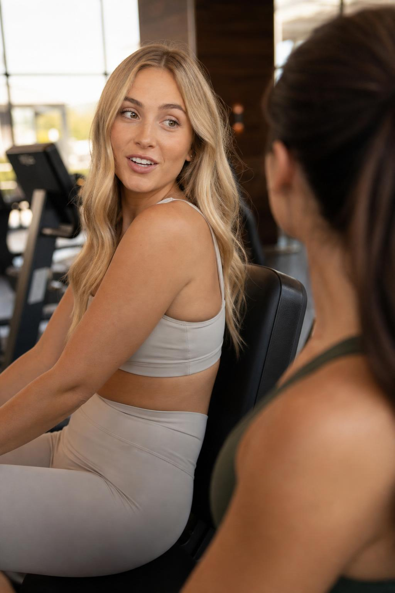
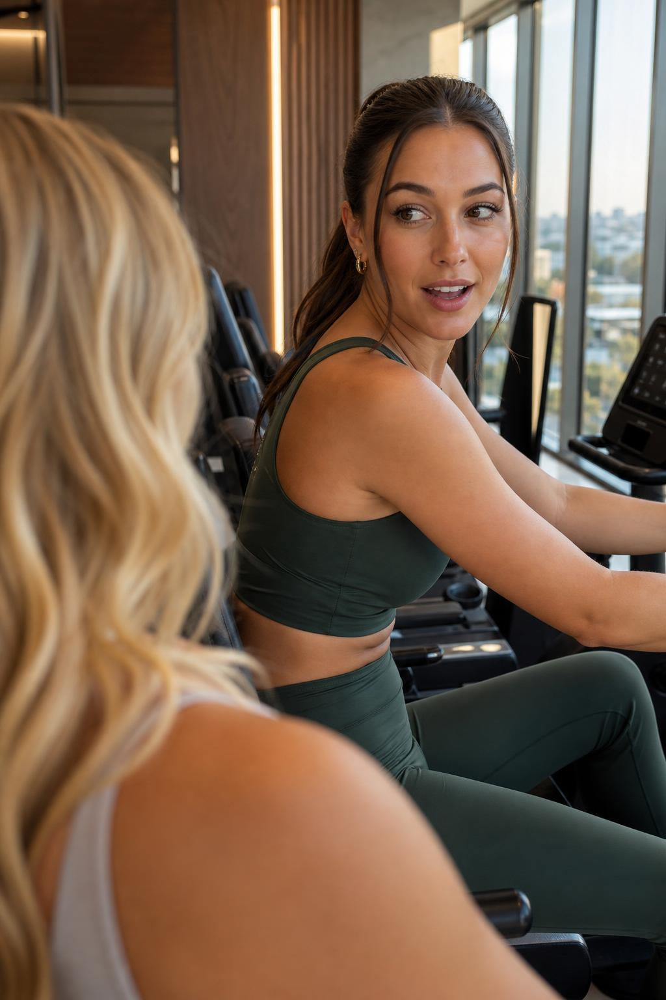
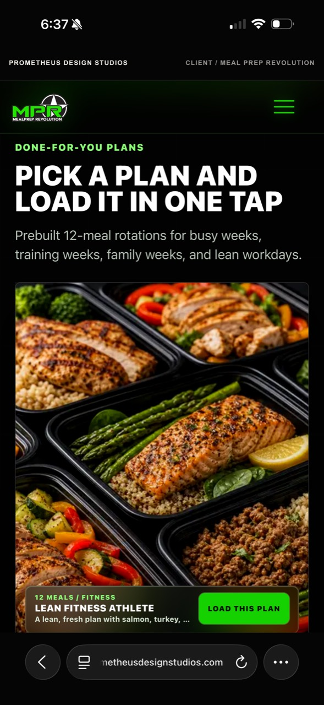

Audio Beds For Approval
Phone-audible v3 preview: louder, more beat-forward mellow Latin-club fitness energy with an upscale Newport Beach feel. Original preview, not a direct artist imitation.
Phone-audible v3 preview: deeper smooth electronic resistance whir with no percussive click. This is louder than final mix level so it can be judged on a phone.
Phone-audible v3 preview of the revised mellow Latin-club music plus deeper magnetic bike whir, before dialogue ducking or final polish.
Candid Camera Direction Board

Camera B alternative: both bikes face the same direction; brunette listener shoulder sits blurred on the right edge while blonde speaker turns sideways toward her friend.

Camera A alternative: both bikes face the same direction; brunette speaker is framed on the right while blonde listener shoulder sits blurred in the bottom-left foreground.

A wider observer-style angle with both bikes parallel and facing forward. Best for establishing or silent transition coverage.

Tighter Camera B crop: brunette shoulder blurred on the right, blonde speaker close enough for lip sync, still facing her friend.

Tighter Camera A crop: blonde shoulder blurred bottom-left, brunette framed on the right, still talking sideways to her friend.
Soft observer crop from between the bikes. Best as a candid setup or non-dialogue transition because both women are visible.

Recommended CTA treatment: keep the real screenshot as the visual and place Character B's CTA audio over it, instead of showing her performing the CTA to camera.